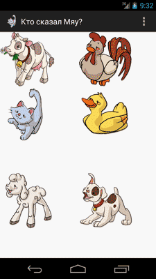

/* Моя кошка замечательно разбирается в программировании. Стоит мне объяснить проблему ей - и все становится ясно. */
John Robbins, Debugging Applications, Microsoft Press, 2000

/* Моя кошка замечательно разбирается в программировании. Стоит мне объяснить проблему ей - и все становится ясно. */
John Robbins, Debugging Applications, Microsoft Press, 2000
Напишем программу, которая поможет определить, кто-же сказал Мяу? Меня всегда интересовал данный вопрос.
Подготовим заранее картинки различных животных и создадим разметку:
<GridLayout xmlns:android="http://schemas.android.com/apk/res/android"
xmlns:tools="http://schemas.android.com/tools"
android:id="@+id/GridLayout1"
android:layout_width="match_parent"
android:layout_height="match_parent"
android:columnCount="2"
android:orientation="horizontal" >
<ImageButton
android:id="@+id/cow"
android:layout_gravity="center"
android:background="@android:color/transparent"
android:src="@drawable/cow" />
<ImageButton
android:id="@+id/chicken"
android:layout_gravity="center"
android:background="@android:color/transparent"
android:src="@drawable/chicken" />
<ImageButton
android:id="@+id/cat"
android:layout_gravity="center"
android:background="@android:color/transparent"
android:src="@drawable/cat" />
<ImageButton
android:id="@+id/duck"
android:layout_gravity="center"
android:background="@android:color/transparent"
android:src="@drawable/duck" />
<ImageButton
android:id="@+id/sheep"
android:layout_gravity="center"
android:background="@android:color/transparent"
android:src="@drawable/sheep" />
<ImageButton
android:id="@+id/dog"
android:layout_gravity="center"
android:background="@android:color/transparent"
android:src="@drawable/dog" />
</GridLayout>
Положим подготовленные аудио-файлы с голосами животных в директорию assets.
Переходим к программной части. Нам надо создать объект SoundPool, загрузить в него аудио-файлы из папки assets методом load().
Зададим максимальное количество одновременно проигрываемых потоков - 3.
Для интереса отловим событие OnLoadComplete.
При нажатии на кнопку будем проигрывать нужный звук.
package ru.alexanderklimov.whosaidmeow;
import ...
public class MainActivity extends Activity {
SoundPool mSoundPool;
AssetManager assets;
int catSound, chickenSound, cowSound, dogSound, duckSound, sheepSound;
int countLoadedSound;
Context mContext;
ProgressDialog dialog;
@Override
protected void onCreate(Bundle savedInstanceState) {
super.onCreate(savedInstanceState);
setContentView(R.layout.activity_main);
mContext = this;
mSoundPool = new SoundPool(3, AudioManager.STREAM_MUSIC, 0);
assets = getAssets();
// получим идентификаторы
catSound = loadSound("cat.ogg");
chickenSound = loadSound("chicken.ogg");
cowSound = loadSound("cow.ogg");
dogSound = loadSound("dog.ogg");
duckSound = loadSound("duck.ogg");
sheepSound = loadSound("sheep.ogg");
// как быстро у нас загружаются ресурсы
/*
* mSoundPool.setOnLoadCompleteListener(new
* SoundPool.OnLoadCompleteListener() {
*
* @Override public void onLoadComplete(SoundPool soundPool, int
* sampleId, int status) { Log.d("MY", "Complete load sampleId = " +
* sampleId + " status = " + status); if (status == 0)
* countLoadedSound++; if (countLoadedSound == 6) {
* Toast.makeText(mContext, "All files sucessfully loaded",
* Toast.LENGTH_SHORT).show(); } } });
*/
ImageButton cow = (ImageButton) this.findViewById(R.id.cow);
cow.setOnClickListener(new View.OnClickListener() {
@Override
public void onClick(View v) {
playSound(cowSound);
Log.d("MY", "COW");
}
});
ImageButton chicken = (ImageButton) this.findViewById(R.id.chicken);
chicken.setOnClickListener(new View.OnClickListener() {
@Override
public void onClick(View v) {
playSound(chickenSound);
}
});
ImageButton cat = (ImageButton) this.findViewById(R.id.cat);
cat.setOnClickListener(new View.OnClickListener() {
@Override
public void onClick(View v) {
playSound(catSound);
}
});
ImageButton duck = (ImageButton) this.findViewById(R.id.duck);
duck.setOnClickListener(new View.OnClickListener() {
@Override
public void onClick(View v) {
playSound(duckSound);
}
});
ImageButton sheep = (ImageButton) this.findViewById(R.id.sheep);
sheep.setOnClickListener(new View.OnClickListener() {
@Override
public void onClick(View v) {
playSound(sheepSound);
}
});
ImageButton dog = (ImageButton) this.findViewById(R.id.dog);
dog.setOnClickListener(new View.OnClickListener() {
@Override
public void onClick(View v) {
playSound(dogSound);
}
});
}
protected void playSound(int sound) {
if (sound > 0)
mSoundPool.play(sound, 1, 1, 1, 0, 1);
}
private int loadSound(String fileName) {
AssetFileDescriptor afd = null;
try {
afd = assets.openFd(fileName);
} catch (IOException e) {
e.printStackTrace();
Toast.makeText(this, "Не могу загрузить файл " + fileName,
Toast.LENGTH_SHORT).show();
return -1;
}
return mSoundPool.load(afd, 1);
}
}
При загрузке файлов метод load() возвращает идентификатор soundID, который нам нужно как-то сохранить для дальнейшего использованию. Объявим для каждого звука отдельную переменную, если же звуков много лучше завести для этого ассоциативный массив.
Файловый дескриптор AssetFileDescriptor для файла из директории assets получаем с помощью метода openFd(), принимающего в качестве параметра имя файла. Если файл не найден или не может быть открыт, то выводим сообщение и в качестве soundID возвращаем -1.
Ради любопытства посмотрим как быстро у нас загружаются ресурсы, для этого напишем обработчик события OnLoadComplete (закомментировано).
Каждый раз когда заканчивается загрузка выводим сообщение в лог и если она закончилась успешно (status равен 0), то увеличиваем количество загруженных звуков countLoadedSound. Когда это количество равно 6, сообщаем об успешной загрузке.
Если мы запустим приложение, то увидим, что есть небольшая пауза между стартом программы и выводом сообщения об успешной загрузке файлов. В реальных приложениях это нужно учитывать, например, выводить диалог "Waiting", пока загрузка не закончится. Если наличие звука критично, нужно как-то обрабатывать все ошибки, связанные с загрузкой файлов. Мы этим заниматься не будем, ограничимся только записями в логах.
По нажатию кнопки вызываем метод playSound(), передавая ему нужный идентификатор звука. В методе проверяем этот идентификатор. Если файл у нас не был найден, то метод loadSound() возвращал -1, а если метод load() класса SoundPool не смог загрузить файл, то soundID будет равен 0, поэтому проверяем, что SoundID > 0, что означает, что файл был успешно загружен. Если же все хорошо, то вызываем метод play().
Запустим программу и выясним, так кто-же сказал Мяу?

Написано по мотивам статьи Звуковые эффекты. Там же можно скачать исходник с картинками и звуками.
Один из читателей захотел выводить звук не через щелчок, а нажатие на кнопку. А когда палец открывается от экрана, то звук должен прекращаться. Получился интересный эффект, который мы нашли сообща. Код для кнопки с коровой (предыдущий код лучше убрать):
int mStreamID; // член класса
cow.setOnTouchListener(new View.OnTouchListener() {
public boolean onTouch(View v, MotionEvent event) {
int eventAction = event.getAction();
if (eventAction == MotionEvent.ACTION_UP) {
// Отпускаем палец
if (mStreamID > 0)
mSoundPool.stop(mStreamID);
}
if (eventAction == MotionEvent.ACTION_DOWN) {
// Нажимаем на кнопку
mStreamID = playSound(cowSound);
}
if (event.getAction() == MotionEvent.ACTION_CANCEL) {
mSoundPool.stop(mStreamID);
}
return true;
}
});
При воспроизведении звука мы получаем его идентификатор, который используемый для остановки воспроизведения.